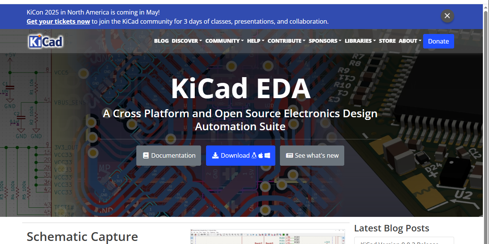
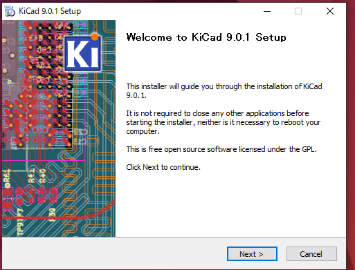
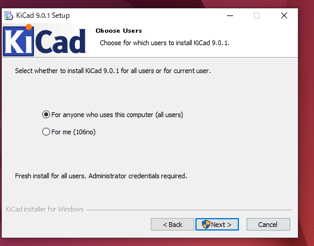
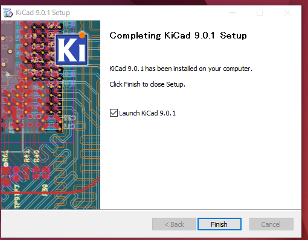
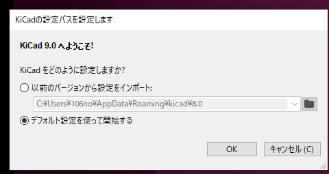

KiCad 環境構築手順
1. KiCadのダウンロード
以下の公式サイトからKiCadをダウンロードします。
KiCad公式サイト
- サイトにアクセスし、トップページの「Download」ボタンをクリックします。

- 使用しているOS（Windows, macOS, Linux）に対応したインストーラーを選択します。

- Europe CERN - Switzerland をクリックし、インストーラーをダウンロードします。

結構でかい

2. KiCadのインストール
- ダウンロードしたインストーラーをダブルクリックして実行します。

- インストールウィザードに従い、以下の手順を進めます。
- 使用許諾契約に同意する。
- インストール先フォルダを指定する（デフォルトのままで問題ありません）。
- 必要なコンポーネントを選択する（通常はデフォルト設定でOK）。 基本的にNextを押す



install


- インストールが完了したら、「Finish」をクリックします。

3. 初期設定
-
KiCadを起動します。

-
初回起動時に表示される設定ウィザードで、以下を確認・設定します。
- 言語設定（日本語を選択可能）。
- ライブラリのパスを確認（デフォルト設定で問題ない場合が多い）。
-

-
設定が完了したら、メイン画面が表示されます。
Note
著者:Shion Noguchi